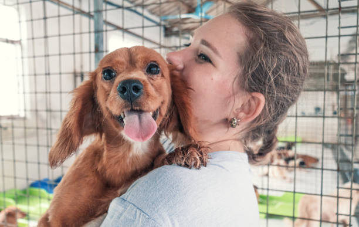
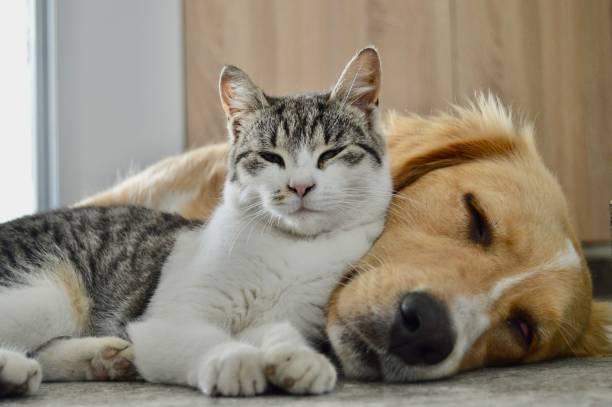

Bem-vindo à Patas ao Lar!
Encontre seu novo amigo de quatro patas.
Por que escolher a adoção?
Adotar é abrir as portas do seu lar para um novo amigo e, ao mesmo tempo, abrir espaço para muito amor na sua vida. Seja um cãozinho ou um gatinho, um pet pode trazer carinho, alegria, companheirismo e transformar pequenos momentos do dia em lembranças especiais.
Muitos animais esperam por uma família que possa oferecer aquilo que eles mais desejam: um lugar seguro para viver, cuidado e muito amor. Quando você escolhe adotar, está dando a um animal a oportunidade de recomeçar e fazer parte de uma família onde possa se sentir amado e protegido.


Ter um animal de estimação também significa criar uma relação de carinho e responsabilidade. Eles precisam de alimentação, cuidados veterinários, segurança, atenção e, principalmente, amor durante toda a vida.
Por isso, a adoção deve ser uma decisão consciente, feita com carinho e responsabilidade. No fim, talvez você pense que está apenas dando um lar para um animal, mas pode descobrir que foi ele quem encontrou um lugar especial no seu coração.
Adote
Seu Novo Amigo
Encontre um companheiro para a vida e transforme uma história através da adoção.
PATAS AO LAR
Como Ajudar
Faça a diferença
Existem várias formas de contribuir para a causa animal. Mesmo pequenas atitudes podem fazer uma grande diferença na vida de um animal.
Doe alimentos
Ração para cães e gatos ajuda a garantir uma alimentação adequada para os animais.
Alimentação é cuidadoDoe utensílios
Cobertores, potes, brinquedos, caminhas e produtos de higiene também são muito importantes.
Conforto também importaFaça uma doação
Sua contribuição pode ajudar com alimentação, medicamentos, vacinas e cuidados veterinários.
Cada contribuição contaToda ajuda faz a diferença! 💚
Entre em contato conosco para saber como você pode contribuir com os animais que precisam de ajuda.
Contatos
Nossos contatos
Tem alguma dúvida, quer saber mais sobre um dos nossos animais ou deseja ajudar nossa causa? Entre em contato conosco! Ficaremos felizes em conversar com você e ajudar a encontrar um novo lar cheio de amor para nossos pets.
Entre em contato
Preencha o formulário ao lado ou entre em contato através dos nossos canais. 💚🐶🐱
Telefone
(55) 98827-3044Localização
Rua das Patinhas, nº 123 - Bairro Jardim dos Animais, Jacareí - SP